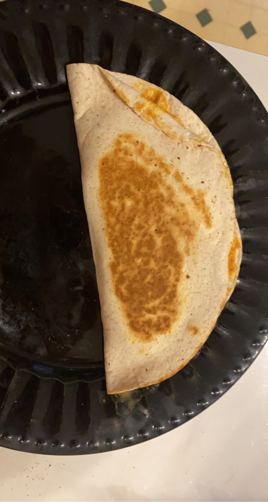
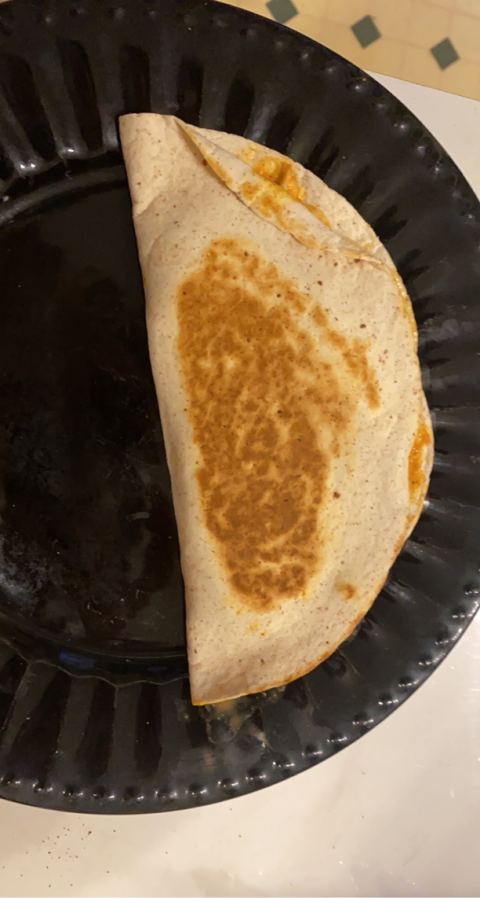

Buffalo Chicken Quesadilla
 

Description
This is an easy recipe I use for buffalo chicken quesadillas that I will typically meal prep and then I can just easily slap them on the skillet. This is kind of an unconventional food, but this is the type of food I love to make, combining two things that are conventionally unhealthy and somehow making them "healthy" together. By healthy I mean a lower calorie version with a lot higher content of protein, which can appeal to a wide range of audience.
My favorite parts about this recipe is it's only a few ingredients, it's very simple to make and it tastes good!
Ingredients
For the filling:
- 2 lbs (900 grams) shredded boneless skinless chicken breast
- ¾ cup (180 grams) Frank's RedHot Buffalo Wings Hot Sauce
- ⅓ cup (70 grams) ranch
- ⅓ cup (80 grams) greek plain nonfat yogurt
For the assembly:
- Low calorie tortillas (1 per quesadilla)
- Low/non-fat shredded mozzarella cheese (70 grams per quesadilla)
Steps:
- Bake 2 lbs (900 grams) of boneless skinless chicken breast in a 12x8 inch dish in the oven at 400°F for 25-30 minutes.
- Shred the chicken and put it in a container that you'd want to refrigerate for prep.
- Add the buffalo sauce (¾ cup/180 grams), the ranch (⅓ cup/70 grams) and the greek yogurt (⅓ cup/80 grams) to the shredded chicken and mix. You can put this in the fridge for whenever you'd like to make a quesadilla, or you can make some first of course.
- Whenever you want to make a quesadilla: get a tortilla and spread the buffalo chicken mixture evenly on one half of the tortilla (75 grams) along with the shredded cheese (70 grams) on top of the chicken mixture then fold the tortilla to form a quesadilla.
- Put the quesdailla(s) on a pan cooking them on medium heat for a couple of minutes on each side then you're finished.
Back home